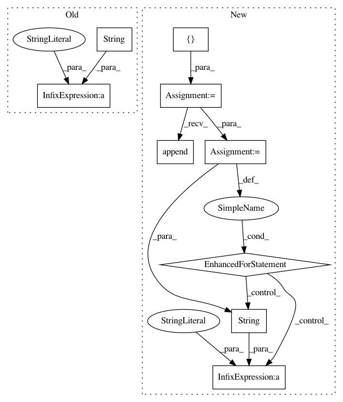

9c3d9ba05502b5f553bc8abc44d08e09e1851e68,deeplabcut/pose_estimation_tensorflow/predict_multianimal.py,,GetPoseandCostsF,#Any#Any#Any#Any#Any#Any#Any#Any#Any#,126
Before Change
// pose = predict.getposeNP(frames,dlc_cfg, sess, inputs, outputs)
// PredicteData[batch_num*batchsize:(batch_num+1)*batchsize, :] = pose
PredicteData[
"frame" + str(batch_num * batchsize + l).zfill(strwidth)
] = D[l]
break
counter += 1
cap.close()
After Change
if counter % step == 0:
pbar.update(step)
frame = cap.read_frame(crop=cfg["cropping"])
inds = []
if frame is not None:
frames[batch_ind] = img_as_ubyte(frame)
inds.append(counter)
if batch_ind == batchsize - 1:
// PredicteData["frame"+str(counter)]=predict.get_detectionswithcosts(frame, dlc_cfg, sess, inputs, outputs, outall=False,nms_radius=dlc_cfg.nmsradius,det_min_score=dlc_cfg.minconfidence)
D = predict.get_batchdetectionswithcosts(
frames,
dlc_cfg,
dist_grid,
batchsize,
num_joints,
num_idchannel,
stride,
halfstride,
det_min_score,
sess,
inputs,
outputs,
)
for ind, data in zip(inds, D):
PredicteData["frame" + str(ind).zfill(strwidth)] = data
batch_ind = 0
inds.clear()
batch_num += 1
else:
In pattern: SUPERPATTERN
Frequency: 3
Non-data size: 9
Instances
Project Name: AlexEMG/DeepLabCut
Commit Name: 9c3d9ba05502b5f553bc8abc44d08e09e1851e68
Time: 2021-02-05
Author: 30733203+jeylau@users.noreply.github.com
File Name: deeplabcut/pose_estimation_tensorflow/predict_multianimal.py
Class Name:
Method Name: GetPoseandCostsF
Project Name: ClimbsRocks/auto_ml
Commit Name: aae3c2048e8fb54452087b2fa9ef66cb133a8a23
Time: 2016-08-10
Author: ClimbsBytes@gmail.com
File Name: auto_ml/predictor.py
Class Name: Predictor
Method Name: ml_for_analytics
Project Name: AlexEMG/DeepLabCut
Commit Name: 9c3d9ba05502b5f553bc8abc44d08e09e1851e68
Time: 2021-02-05
Author: 30733203+jeylau@users.noreply.github.com
File Name: deeplabcut/pose_estimation_tensorflow/predict_multianimal.py
Class Name:
Method Name: GetPoseandCostsF
Project Name: AlexEMG/DeepLabCut
Commit Name: d63692e0304ae593352d509e0222f0d5befc67dc
Time: 2021-01-06
Author: 30733203+jeylau@users.noreply.github.com
File Name: deeplabcut/pose_estimation_tensorflow/predict_multianimal.py
Class Name:
Method Name: GetPoseandCostsF